Python Content
Unit 1 Python Basics
In Unit 1, we learned the basics of Python. Math tricks and variables taught us variables and operations, respectively. We learned about classes and objects in Person.py, and the properties of objects, such as x and y. We learned about the Python environment, runner, and screen. In short, we learned the basics of Python.
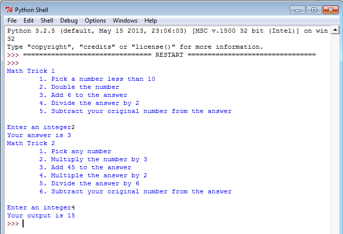 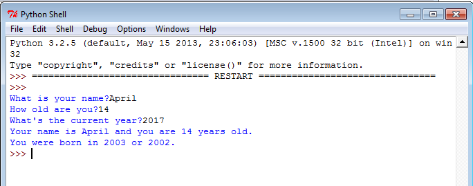 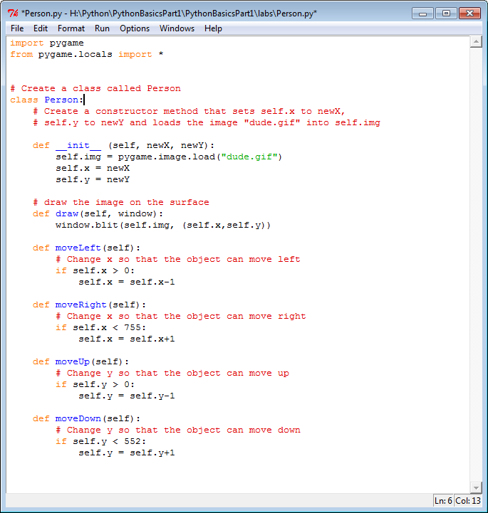Unit 2 If Statements
In Unit 2, our primary focus was if statements. In addition to that, our various labs strengthened our understanding of drawing screens, drawing objects, objects and their properties, and classes. In the Collide Lab, we learned about the collide function. In the Don't Walk Off lab, we learned how to use if statements and the x and y of objects to prevent them from walking off a screen. In the Wall Runner, we combined these two basic concepts to create a program where two different sprites could be controlled with WASD and arrow keys, and they couldn't collide into walls.
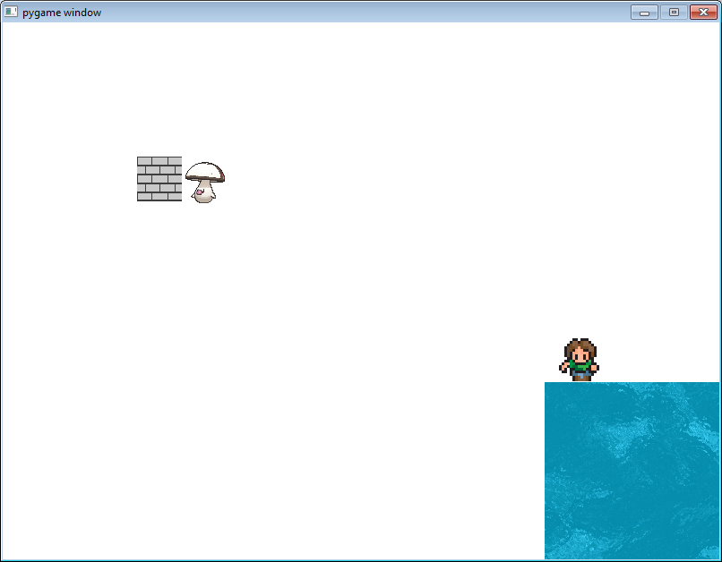In the Line Runner lab, we were able to make a complex game with these concepts to create a game where a sprite was to jump over obstacles and get rewards. In this lab, we also learned how to make objects jump up and down with arrow keys.
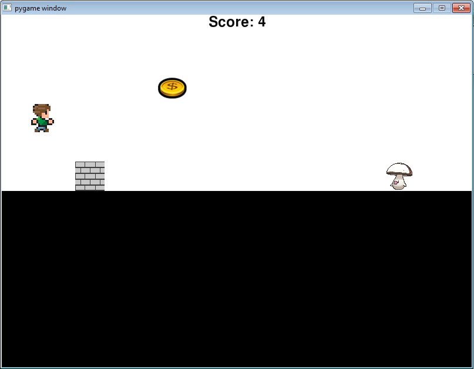Unit 3 Loops
Unit 3's primary focus was loops. However, the series of labs in Unit 3 were all fairly difficult, and taught us many concepts besides just basic loops. The Caesar Cipher lab, for example, was difficult to program and required a string of the alphabet and knowledge of manipulating strings by adding, deleting, measuring, etc strings.
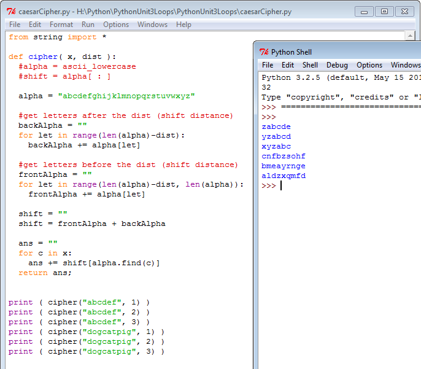In the Ground lab, loops were used to draw a 50 by 50 section of grass, with random images of rocks as well, over and over until the entire screen was drawn. In addition to this, we used our previous knowledge of objects, timer, and collide to build a game on this background, where a person object tries to collect 10 coins within a short time limit.
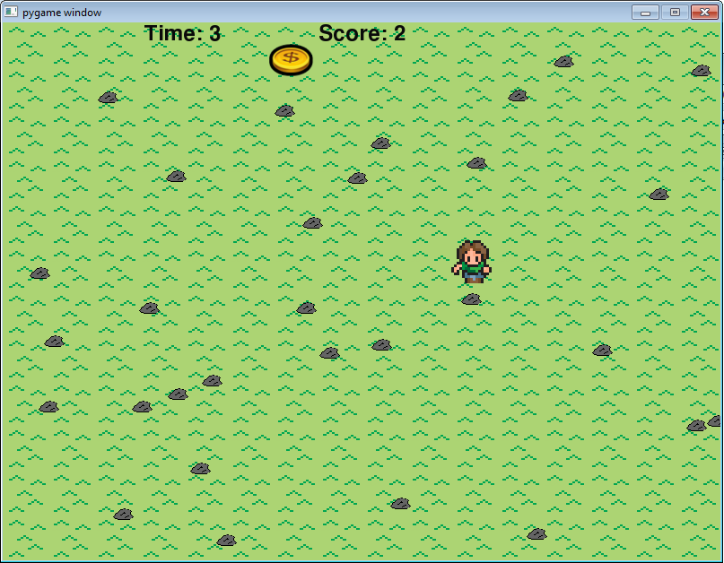In the Squares and Circles lab, loops were used to draw concentric circles of decreasing radius and brightness, and squares with decreasing size. This was a good exercise of using loops, as well as reviewing hexadecimal colors and object properties.
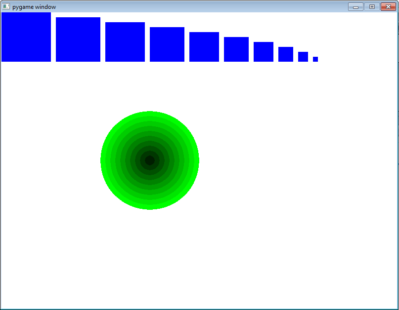Unit 4 Lists
Unit 4, with the primary learning focus on lists, was the last unit. Most of the labs involved creating multiple similar objects (with slightly different properties, such as position) out of lists of objects. This way, we learned to create multiple objects quickly and efficiently. Since we also learned properties of loops such as append, pop, delete, length, and position of list items within a list, these object lists were dynamic and could be changed conditionally.
For example, in the simple Costume Lab, the first lab of this unit, we created an object with a list of four different costumes it could have, depending which direction it was travelling. The class of the object had its 4 costumes programmed in it as a list, and the runner took costumes from this list as the sprite changed direction. This object also needed the "arrow key to move" code, a review from previous labs.
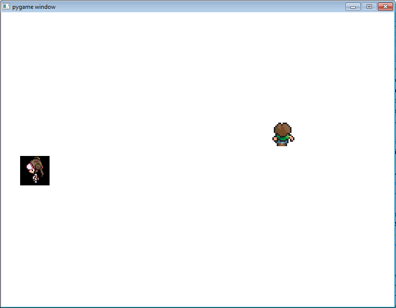 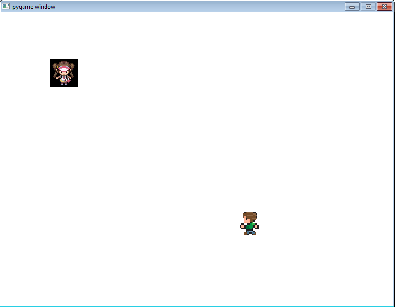In another lab, the Dodge Enemies lab, a class of enemies was made. A list of objects was made by calling the class multiple times in a list. These objects were all similar, all sharing the same look, except they moved back and forth on the screen at various speeds and intervals. Of course, controlling the player sprite to dodge all of these enemies was also necessary, which was a simple review. We learned how to use lists to manipulate objects, and their positional properties. This lab also used loops to draw the background; 50 by 50 boxes of grass repeated on the top and bottom, and 50 by 50 boxes of sand repeated in the middle.
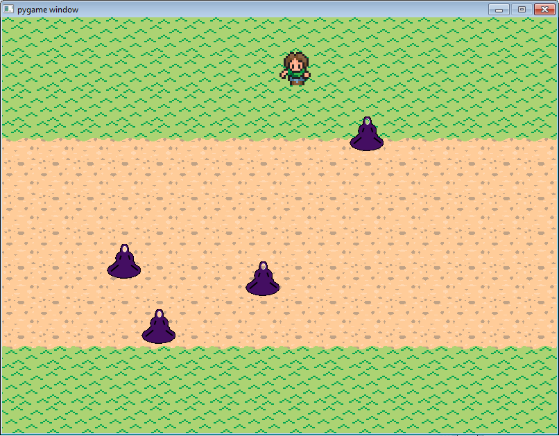